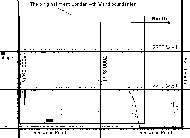

In the early 1980's I was the home teacher to Ward and Louie Atwood. They had a farm where the West Jordan 4th Ward chapel and the neighboring condominiums are now located. The Atwoods were the kindest of souls and had a great sense of humor. They were down-to-earth farmers who kept interesting farm animals and had many stories to tell. As I would leave their home, I always had to take home a "taste" of eggs or of butter or meat from their farm. This writing is what I might call a "taste" of West Jordan 4th Ward. There is so much involved in the story of what a ward is and of the people living there. No writing can do justice to telling the story of a ward and its people, for it must include a very great many, who like the Atwoods, make priceless contributions, but may no longer be with us. It is to these people that this history is dedicated.
Why is it interesting to review the history of a church congregation we call a Ward? Is it merely a designated area where members of the Church of Jesus Christ of Latter-day Saints are grouped for meeting together and interacting with each other in spiritual and social matters? To me it is more than an arbitrary grouping of individuals and families. The work of the Lord is a house of Order. We believe that our Heavenly Father, through His son Jesus Christ, directs the affairs of the church, including the organization of wards and the calling of bishops. A ward, then is a means for the blessing of a particular portion of the Saints of God. We meet together on Sundays and on other occasions. We learn from each other. We rely on each other in times of trial. We struggle with our own feelings about the gospel itself. We teach our children. But the church continues on and the individuals who make up the wards come and go in various levels of involvement. The great blessing of a congregation we call a Ward is the power and love that continues through it all. Some cherish the memories, some have memories they would rather forget, but as a whole, the Ward is a vibrant entity that takes on a significance which transcends the individuals, homes, families, organizations, events and boundary changes. This document is an attempt to bring together facts and figures as well as the lives, living, spirituality and love that is the West Jordan 4th Ward.
The Church and City Before the Beginning of the Ward
The original West Jordan Ward was first created in 1852 and it included all the area west of the Jordan River as well as present-day Midvale, West Sandy and Crescent. The old pioneer rock church on 7800 South was built to serve the saints in West Jordan. The name West Jordan was a shortened version of the name of the river: "Western Jordan". In 1877 that ward was divided into four wards, including West Jordan, North Jordan (now Taylorsville), South Jordan and Herriman. In 1895 the East Jordan community, then called Bingham Junction, was divided from West Jordan. That ward was called the East Jordan, later Midvale Ward. The West Jordan Ward was divided into the West Jordan First and Second Wards on April 28, 1946. The membership at that time was 1,436. The Orem track line was the dividing line for the wards with the Second ward on the west side of the tracks. The Orem Line was the railroad line of the Salt Lake and Utah Railroad, named for its owner, Walter C. Orem. It ran roughly parallel to Redwood Road at about 1800 West. The Orem Line trains ran from 1914 until it was discontinued in 1945-46. There was a station, called the Hibbard Station on the Bingham Highway (7800 South) nearest to where the ward is now. The West Jordan wards all continued to meet in the "Yellow" Chapel at about 7900 South Redwood Road until 1952 when the new building was dedicated at 7925 South 2700 West by President David O. McKay. This new building is the building where the saints met when the West Jordan 4th Ward was created in 1959.
The city of West Jordan (the Town of West Jordan originally) was created on Jan 10, 1941. The boundaries of West Jordan at the time were: 6600 South on the north, 3600 West on the west, 9400 South on the south and the Jordan River on the east. The city was changed and enlarged over the years since then. The population of the city went from 2,107 in 1950, 3,009 in 1960 and 4,221 in 1970 to 27,345 in 1980 and grew rapidly from then on. The number of homes followed a similar measurement with 650 in 1960, 1,600 in 1970 and 7,064 in 1980.
The first elementary school in West Jordan was built in 1925 on Redwood Road south of 7800 South Street. The roof partially collapsed in 1947 (with no injuries). It was rebuilt and survived until the building closed in 1975 as it was considered unsound. Majestic Elementary was completed and students started meeting there in 1975, with an enrollment of 530 students. A junior high school was built in 1930 next to the old elementary school. In a Deseret News article on January 28, 1957 it was reported that high school students began from this time to be transported to Bingham High School in Copperton. They formerly attended Jordan High School. Later that year on May 1, 1957, it was reported that the new West Jordan Junior High School was dedicated, described as an "ultra-modern building" (Deseret News). Its location at 7550 South Redwood Road is actually about a block west of Redwood Road near the abandoned Orem track line. When the school began in 1958, the original enrollment was 692 students. Both this school and Majestic Elementary school are within the boundaries of current West Jordan 4th Ward.
The resource material for this early history is "A History of West Jordan", Furse and Moosman, editors, Duncan, Furse, Mogan and Moosman, authors, printed and published by Publishers Press, 1995.
The Beginning of the Ward
The West Jordan 4th Ward of the Church of Jesus Christ of Latter-day Saints came into existence upon the division of the West Jordan 2nd Ward on September 27th, 1959, in a meeting presided over by Leonard Beckstead of the Stake Presidency. West Jordan was in a time of change. The area had been settled over one hundred years earlier and had been primarily a farming community. At this time, though, many of the people were turning to other ways to make a living, including work at the Kennecott Copper mine, the smelter at Midvale, construction and increasingly in commuting to the big city for jobs in businesses there. In the following ten to fifteen years, West Jordan became a substantial suburb and bedroom community, and as such grew as homes sprang up to accommodate the young families who moved here.
| Overlaying the current ward boundaries (as of 2004) on the original ward area shows that three or four homes from the original ward area are in the current ward boundaries. These include two homes on Drake Lane (7400 South), where Emily Drake lives now and the house at the end of the lane. A third home is the older house on 7600 South at 1800 West on the north side of the street, near the West Jordan Middle School. There may have been one home on 2200 West Street as well. Many of the homes along the west side of Redwood Road were in existence when the Fourth Ward was originally created, but at the time they were part of the West Jordan Third Ward. When the east boundary of the ward was moved from the Orem Track Line to Redwood Road, in the early 1970's, those homes became part of the Fourth and Eleventh Wards, including a number of homes that pre-date the creation of the West Jordan 4th Ward. Also in the original ward boundaries is the West Jordan Middle School (originally called West Jordan Junior High School). |  |
| With the ward division, all members living north of the Bingham Highway and west of the Orem track line would become members of the new West Jordan 4th Ward. At this time the Bishopric of the 2nd Ward was also changed, releasing Bishop Max Curtis Jewkes who served for many years. The new ward would share the building with the West Jordan Second Ward. This building was built largely due to the efforts of Howard Barben, the Stake President and member of the new 4th Ward, and built in the years prior to the creation of the ward. The original chapel part (actually the part in the center of the picture below the steeple) was a chapel from the U.S. Army Air Corps, based in World War II in Kearns, Utah. He also arranged for lumber for constructing the rest of the building from a structure acquired from his place of business, the American Oil plant in North Salt Lake, where it was scheduled for demolition. His employer was quite impressed by the initiative and dedication of the people in cleaning up and moving this building structure to West Jordan. The footings for the chapel were supervised and measured by Junius G. Drake (mentioned later in this history). |
|
The bishopric of the new 4th ward included Paul J. Steinfeldt as Bishop, Ross Butterfield First Counselor, George Brockbank Second Counselor, Jack Jorgensen Clerk and Glen Margetts Assistant Ward Clerk. A week later, the auxiliary leaders were sustained, including Lavern Barben as Relief Society President. Here are a few details about the Relief Society back then. In 1959 the Relief society meetings were held on Tuesdays at 2:00 PM. Bazaars and bake sales were held to earn money for expenses. They also cooked and served at ward dinners and sold quilts made on work days to earn money. The sisters assisted with funerals by arranging flowers and then transporting them to the cemetery. They also provided lunch for the mourners and close friends. Relief Society work meetings (once a month) were held at 10 AM on a week day and lasted until 3 PM. Elizabeth Schorr and Beth Culbertson served as presidents of the Relief Society after Sister Barben was released, all during the time that Paul Steinfeldt served as bishop of the ward. During Sister Culbertson's time, the Relief Society was hired to make fifty colorful fancy vests for a horse riding club. The sisters also assisted in transporting patients to the outpatient department of the LDS Hospital. |
|
Emily Drake was sustained as the president of the Primary in 1959 at the time the ward was created, a position she would hold until April 24, 1966. Sister Drake is still a member of the 4th Ward as of the date of this writing in 2004. On September 18, 1960, the West Jordan Stake was divided creating the Riverton Stake. The West Jordan Stake now contained the Bingham, Copperton, South Jordan Wards as well as the West Jordan 1st, 2nd, 3rd and 4th Wards. That meeting was held in the Auditorium of the New Junior High School. On, October 16, 1960, the priesthood approved the renting of a fifteen acre farm to be used as a welfare project. Ron Drake, who served years later as a bishop of the ward departed for his mission to the Great Lakes Mission on October 29, 1961 from the ward. The first social activity mentioned in the ward historical record is the "Annual Ward Outing and Hayride" on August 1, 1962. There were ward reunions and dinners held every February for at least ten years. Many of these also functioned as fund raising dinners. There was a ward carnival held at the city park on June 22, 1965 and a ward hay ride a month later. On September 29, 1963, the West Jordan Junior High School Seminary Building was dedicated. The building was used as a Seminary building for a full year prior to this dedication. |
|
On April 17, 1966 during Ward Conference, the bishopric was released, including Paul J. Steinfeldt as bishop. Ward conference attendance was 375 or 54%. Ross W. Butterfield was sustained as bishop, with Oral Thacker and Roy Warburton as counselors. Sister Ruth Ann Hogan was sustained as the Relief Society President at that time. During Sister Hogan's time they made a cook book and sold copies. Sister Ruby Wood also served as Relief Society president during the time Ross Butterfield served as bishop. On December 20th 1966, a ward Christmas program and party was held in which the members donated $581.26 to get the Ward out of debt for the year 1966. A year later a similar activity was held where 250 attended and $358 was raised. Fund raising was a continual concern as ward activities and building construction was funded mainly from local members. |
The First 4th Ward Division - 1969
|
On June 15, 1969, the ward was divided and the bishopric changed. All those of the ward who lived west of 2700 West street would now be part of the West Jordan 6th Ward. Ross Butterfield was released (who was called to serve in the stake presidency). Jack Jorgensen was sustained as the new bishop with Dimar Hogan and Robert Duncan as counselors. The following week, Sister Emily Drake was sustained as Relief Society President of the ward. Bishop Jorgensen remembers some significant changes that were taking place in the church. Years before when he was a statistical clerk (released December 1961), he says that the percentage of full tithe payers was about 22%, which was also the average Sacrament meeting attendance at that time. Later, as bishop he said that both tithing and attendance were closer 35%. People were becoming more involved in the church. This was true in much of the church. It is interesting how closely tithing faithfulness matched meeting attendance. |
Bishop McDougal - Time of Great Change and Growth
On May 24th of 1972, Bishop Jorgensen was released and Carmi McDougal was sustained as bishop of the West Jordan 4th Ward with Larry Lunnen and Dale Steadman as counselors. Dale Hunsaker was sustained as the Executive Secretary. It should be noted that with the release of Bishop Jorgensen, William Edgecomb was also released as Ward Clerk. He had held this position for over 10 years, for most of the time of the existence of the 4th Ward at that time. He continued to serve as an assistant ward clerk for a while. Emily Drake was released as Relief Society President later that year on August 6th of 1972. Sister Nola Duncan was called as the new Relief Society President, followed closely by Sister Pauline S. Hobbs and then Karen Smith, who served up until the time of Bishop McDougal's release in 1976. Among the many activities of the Relief Society at the time, in 1973-1974 a home nursing course was taught by the Red Cross to the sisters of the ward.
The Primary presidents during this time were Barbara Kay Lunnen, Julia Lynne Martinez, Kristine Anita Madsen, Sharon Conrad and Kathy Bess. Though the pressures of all the little children in this busy ward could account for this high turnover, in reality, other factors including the two ward divisions accounted for these many changes.
The ward was divided on March 4, 1973, creating the West Jordan 11th Ward to the north. Prior to the division there were approximately 1000 members in the 4th ward. Sometime before this the east boundary was moved from the Orem track line to Redwood Road so some members of the West Jordan 3rd Ward became members of the 4th and 11th Wards. With this release, Bishop McDougal's counselors were no longer members of the ward. His new counselors were Jerald Hoskins and Marlin Steinfeldt.
During the next few years names appeared in the Historical Record of people well known in the present-day ward. These included Hunsaker, Armitage, Jacobson, Loosli, Bedont, Newland, Masters, Roberts and Bullock.
On April 27, 1975, the 4th ward was divided again creating the West Jordan 19th Ward from the area west of 2200 West Street.
November 20, 1975 the West Jordan Utah East Stake was created, with President Dale Bateman as president. With this division the new stake had 5 Wards and 2,685 members, all meeting in one building: 7250 South 2200 West.
As you can tell from the many organization and ward boundary changes, Carmi McDougal was bishop during a difficult yet exciting time. The ward met in several buildings during his tenure. First was the original 4th ward church on 2700 West, sometimes now referred to as the Fire Station church. Then the ward met in the old First Ward building on Redwood Road near where the City Hall is now. He says that his office was a very small room in that building and that every room was busy and Sunday meetings were quite noisy with all the children. They were there for about 6 months to a year. The ward then met in the 2700 West and 7000 South building for a while until they met in the new building at 7250 South 2200 West (now the 11/23 Wards building). Around that time, plans started for the new building on 7600 South, since there were no other buildings in the new stake and they needed a new stake center building. As part of this preparation, the Primary held a fund raiser on March 10, 1976 to purchase a flag pole for the new stake center.
Ward activities and outings continued. Camp outs included one in July 1972 to the Spruces where 300 attended, one in August 1973 at Smith-Morehouse, near Oakley with 50 attending, one in July 1974 at Hanging Rock Picnic site and Little Mill Campground in American Fork Canyon with 150 participating and a camp in August 1975 at Tanner Flats in Little Cottonwood Canyon. There were also several fund raising dinners held each year, usually for ward budget or building fund. There was a scout troop fund raising dinner on February 9, 1974 which included "corny" skits (imagine that!). The ward held a free "get acquainted dinner" on April 12, 1974. Considering the rapid growth and change in the ward, these activities and outings were very important to help everyone feel a part of the ward, spiritually as well as socially. Also in 1974 the ward Primary entered a float (#99) in the Days of '47 Children's parade, with a theme of "Mother Goose." This involved about 40 children. In August of 1975 there was a youth river trip on the Colorado River near Moab, Utah.
At this time Bishop Steinfeldt was serving as the Stake Patriarch. He died of a heart attack a few years later in March of 1979. He is the only 4th Ward bishop not currently living.
On August 31, 1975, the new meetinghouse on 2200 West was dedicated. The wards actually moved in and started meeting there in the first week of March. The new meeting schedule (as reported in the September 1975 history) was: Priesthood at 7:45 AM; Sunday School at 9:40 AM; Sacrament Meeting at 2:15 PM; Relief Society Tuesday at 10:00 AM; APMIA Tuesday at 7:00 PM; and Primary Wednesday at 3:40 PM. During this time buildings were completed with many people donating labor in much of the construction. This included cement work, brick work, sprinkler pipe installation, roofing, landscaping and many other tasks as well as providing for the workers. There were many of the ward and stake members who were in the construction industry and their skills, talents (and tools) were well used.
Building the New Stake Center Chapel
Left:Ward Atwood by his home |
The building of the West Jordan Utah East Stake and the West Jordan 4th Ward chapel (and other wards as well) was built on property acquired from Ward and Louie Atwood. They built up their home and farm from very humble beginnings, many years before the 4th ward was formed, first living in a tent, building a chicken coop and then enlarging it for them to live in part of it, then building a basement to live in, then the house. The house was made mainly of materials from old railroad boxcars. Their property was on the rail line and they acquired a piece of the rail line property to add to their place when that became available. They raised a beautiful family of seven children. They raised hay and grain for their farm animals. This area of the ward had significant farm land that was beginning to fill up with homes during these years. Brother and Sister Atwood were hard working, generous and kind. Their home and the remainder of their farm were a part of the landscape of the area for several years yet to come. Both of them have passed on. He died in March 1983. The Chapel and the condominiums of the 44th Ward are now where the home and farm stood. |
| Colleen Loosli, a daughter of President Howard Barben, served as the Relief Society President for most of Bishop Newland's time, followed by Margie Barker. During this time, the Relief Society had mini-classes on many topics including food storage, quilting, tennis, hair cutting, genealogy, exercising and a number of classes on how to use wheat in family meals. They donated money to the statues that were built at Nauvoo, Illinois. They learned about first aid and the Heimlich Maneuver. Sister Camilla Kimball, wife of President Kimball spoke at their Relief Society birthday social on March 16, 1978. Husbands and friends were invited. There were about 200 in attendance. On July 26, 1978, they had an outing for the Relief Society sisters and husbands at Storm Mountain. |
Growth and More Ward and Stake Divisions
|
In July 1979. The bishopric was changed again and Robert M. Roberts was sustained as bishop with Steven Davies and Terry Loosli as counselors. The block meeting program began soon afterwards on 2 March 1980. Sharon Masters was called and sustained as the Relief Society President on June 15, 1980 and served until after Bishop Roberts was released in 1984. The ward was still growing. A few homes were being built, but the main growth came from growing families. There were apartments on 7800 South, then called the Americana Apartments, which brought people into the ward, but generally for the short term as they moved in and out more frequently than those in the homes. Bishop Roberts saw great opportunities and enthusiasm in the ward. People supported each other and strengthened the church here. As one bishopric meeting came to order, Bishop Roberts is reported as asking for some red paint so he could go about the ward boundary making a red dotted line indicating that "the West Jordan 4th Ward is On Fire!" |
| As early as March 1981, it was discussed whether the Elders Quorum should be divided, considering the many Elders in the ward. This is an indication of how big the ward was becoming. The Primary was large. Jeanette Bullock was the president at the first of Bishop Roberts' time, then Caroline Walker. There were many, many small children in the ward so there was a great need for the nursery as well as many teachers. With the new meeting block program, all this took place now during Priesthood Meeting and Relief Society Meeting. There were new challenges with the program, especially in getting people to serve in the primary. Before this time, young women sometimes helped in teaching primary classes, but now with the Young Women class time during Primary, this was no longer possible. This is but one of the new concerns with implementing the programs of the church at this time. The ward continued to enjoy social activities. Bishop Roberts was an elementary school principal at the time, but he had physical education and sports as part of his university education. In June of 1981, the ward held a physical fitness night. |
The Drake Family Legacy
|
|
With the adding of homes and land from the 23rd ward, the Drake family and farm became part of the 4th ward again - almost exactly 10 years to the day from when they were affected by a ward division that placed them in the 11th Ward. The Drake Family Farm predates the West Jordan 4th Ward by many years, decades actually. The generations of the Drakes are a part of West Jordan history, helping to shape the growing community. The original farm was twenty acres and is now ten acres and home to farm animals, home industry and family as well as preserving history of the area. Edward Drake joined the LDS Church in Southern England in the early 1870s, moving with his immediate family to America when he was disowned by his parents and family. His wife passed away and he remarried in Utah. At first, he lived in Midvale and worked at the smelter there, then in 1880 he purchased his 20 acre farm. Years later, the farm was divided between his two sons Joe and Junius. Joe's children later sold most of their ten acres and many homes in the area are built on that land. Joe's house is still at the end of Drake Lane. The Drake Family Farm is on the remaining 10 acres, where the Ron and Gene Drake families live as well as their mother, Emily. Junius was born in 1885, just a few years after they started the farm. The home they lived in when he was born was a dugout home. |
| The people of the area struggled to make a living during winters and especially through depression times. They worked at the sugar factory during winters and some worked at the smelter. Chickens and eggs also helped families survive. Gene remembers that when they needed to travel, they would walk to the train station on 7800 South. If they were unable to get the train there, they would walk to the train in Midvale or up to State Street to get a bus. Gordon built the home for his family in 1964 where Emily now lives. Gordon and Emily raised their family of three daughters and two sons on the farm. Eugene and Ron were the sons, both of whom live in the ward, Ron serving as the bishop of the ward when Bishop Roberts was released on 22 May 1984. |
|
| With the new shape of the ward, including the 108 unit Redwood Road Apartments, the process began to work together as a ward for the inclusion of all. Many young families were now part of the ward, bringing in a great new spirit. New homes on the northwest part of the ward were also built over the previous few years which brought in some great new families. With all this came a concern over the large Elders Quorum. Soon after Bishop Drake began his time of service as bishop, the Elders Quorum was divided into two quorums, the North and the South quorums, with some apartments being in each quorum. In the end of 1985 Ed Annis was president of the North and Dave Bedont was president of the South. Jerry Humphries was the High Priests Group leader and Craig Pearson was the scoutmaster. Kathy Bess was the Young Women President, Gregg Smith was the Young Men President and Marcia Pack was the Primary President. |
|
The Relief Society was also busy with strengthening the ward with the new changes. It is reported in the Relief Society history: "An influx of new members from the Redwood Road apartments when the ward boundaries were changed required many visits weekly to new move-ins by the presidency. Handouts with ward information were given to these sisters and getting-to-know-you and talent surveys were handed out. Newsletters were printed to introduce new members to the ward.... A friendship committee was formed." The Relief Society presidency was changed with Sister Masters being released and Kay (Kathleen) Roberts sustained as Relief Society President on November 11, 1984. Ward social activity continued, including some activities at the apartment complex to bring people together. Progressive dinners were held to help people get better acquainted. Ward camp-outs continued. Before this time, the ward began the tradition of a summer ward dinner and camp-out at the Cherry Hill resort in Kaysville. The camp in 1985 was on June 28 and 29. From early on, the camps were held in June of each year. Some other traditions also began, such as Gregg Smith "brewing" his dry-ice root beer which is always a great hit. The late night visiting and playing also became part of the experience. Even when people moved out of the ward, they were invited and many came year after year to the outing. Also in 1985, on August 24, was a ward picnic at Copperton Park. This park was also a favorite for ward youth and social activities. The Cherry Hill outing in 1986 was held on June 6th and 7th. The Ward Christmas party was held on December 12th. Cherry Hill in 1987 was held on June 5th and 6th. The Christmas party was held on December 11th. Cherry Hill in 1988 was held on June 24th and 25th. |
Bishop George Masters
| Up to the mid-1980s, the changes in the ward were mainly external. After adjusting to change and working together, the Ward as an organization and a people continued to serve and strengthen the Saints through family growth and change. The external forces that brought change were generally in the past, but the many events and experiences of life continued to affect the people individually and as families. There were times where nursery classes were bulging, times when the scout troop was very large, times when missionaries went out in great numbers. All this as families grew and changed. The people in the apartments came and went, some stayed for many years, others for only short times, but for the most part joined in the vibrant life of the ward. There were a number of families from the apartments who found opportunity to buy homes in the ward. These included (among others): the Woodruffs, the Walls, the Frohs, the Wildes, the Sundbergs and the Cramers. |
Music in the Ward
|
Susan Newland was released as the Relief Society President in March or April of 1992. Julie Smith was sustained as the new president. It is interesting to note that both Susan Newland and Julie Smith were well know musicians in the ward. Both served for many years, past and future as ward organists. They probably had more influence on the music in the ward as being among the music and piano teachers to children in the ward for many years. Other music teachers were Susanne Hunsaker and Jeanette Drake. A few others taught some, but these four trained many of the ward youth to play the piano. The ward had the blessing of having many who played the piano and organ. Four sisters were mentioned in the previous paragraph, but others played as well, including (but not limited to) Renee King, Joseph Buchanan, Ann Taylor, Amy Mason and a few others who moved in and out over the years. |
Bishop R. Alan Bullock
|
Bishop Masters served as bishop until he was released on 19 April 1992 as he was needed to serve the church at the BYU Center in Jerusalem. Bishop Bullock brought a great legacy of church service as the new bishop of the ward. He served in the Stake Presidency and in other stake and ward callings for many years prior to his calling as bishop. He is also a great teacher and taught the members lessons in spirituality and compassion. During this time the bishopric and the Relief Society presidency focused on visiting homes of the members on a more regular basis. This was particularly good in helping people newly moved in to the apartments become involved in the ward. This tradition of visiting continued for years to come. Bishop Bullock was also a skilled outdoorsman. In 1995, he led the older scouts and their leaders on a long two-day hike in the Capitol Reef area of southern Utah. Later that year he helped lead a camp for these scouts to Boulder Mountain and took them through some slot canyons south of there. In January of 1993, he helped teach a class in Relief Society Homemaking on cooking with sour dough. He was assisted by his wife Jeanette and Ken and Paula Ivie. |
| On 11 Feb. 1996, Julie Smith was released as the Relief Society president. Kathleen McConnell as called to serve. In February of 1997 they had a bread dough and baking demonstration with Rhodes Bread Dough. They made a number of interesting items, including Frosty the Doughman. In July they had a goat soap demonstration by Jeanette Drake and a cake decorating demonstration by Lonni Stevens. The Relief Society held a super Saturday on October 18, 1997 where many projects were made including Christmas wreaths, Christmas cards and miniature bird houses. Opportunities for welfare service continued. For years the ward had assignments at the church cannery in Murray. In September of 1996 the ward started receiving assignments at Welfare Square in downtown Salt Lake. Later in that year, there was an orientation for working in a church vegetable farm in Sandy. The ward worked on projects on that farm during the years of 1997 and 1998. Many ward members helped on these projects. One report summarizing the service during the week of July 15-19, 1997 listed 28 people from the 4th ward for 42 combined hours on one day and 12 people with 21 and a half hours on another. On May 6, 1997 the ward sponsored a preparedness fair with a lot of demonstrations and displays of how to use wheat, prepare meals from storage, and many other storage and preparedness details. On July 19, 1997 the ward participated in a project of painting the bowery building at Camelot Park. The project was part of a church-wide effort to commemorate the sesquicentennial of the pioneers arriving in the valley. |
|
Bishop Joseph F. Buchanan
I, Joseph Buchanan was called to serve as the bishop of the West Jordan 4th Ward following Bishop Bullock. Much of the work of the ward continued as before, but I have a deeper understanding over the next few years of this history than most, mainly details that cannot and should not be included here. There are many stories of lives changed that are personal and too sacred to be printed. Surely this is also the case with the bishops of the ward.
Sister McConnell continued to serve as Relief Society President for a few more years. Their Christmas party for 1997 included music and a play presented by Elaine Irwin, Marilyn Taylor, Rachel Masters and Melissa Williamson, accompanied by Susan Newland. During the following year a number of activities and projects took place, mainly during the Homemaking Evenings. These were held once a month in the evening. They made temple bags and quilts. They sewed 200 baby hospital gowns (to be sent to China). They made floral arrangements on one occasion. One evening, they had a special temple day where they did baptism and endowment work for the dead.
A number of funerals took place over the next few months. One of the most touching experiences was when Paul and Wendy Lloyd had a baby who was born and only lived for a few minutes. Medical tests showed that this would probably be the case, so the family knew this would happen and prepared for it, but it was a difficult time nonetheless. The members of the ward rallied around the family to give comfort. Larry Underwood and Donna Siebum, former members of the ward, were eulogized in funerals in the ward. On May 29, 1998, Cleon Wilcox passed away while travelling in Kentucky with his wife. He had just recently celebrated his 98th birthday. The funeral was held on June 2nd. Cleon and Julia had been in the ward for about 7 years and his spirit and enthusiasm for the gospel had a great affect on many people. Julia continues to this day to be a great source of encouragement to the ward and serves well in many ways, including welfare assignments at the cheese factory and doing temple work.
The Relief Society continued in great service to the ward, particularly to families at this times of many funerals
On March 15, 1998, Howard Barben was released as the Stake Patriarch after serving for many years. Many youth and adults received blessings under his hands. President Barben served for many years as the Stake President back when the ward began. President Kent Mabey, a former Stake President was sustained as the new Stake Patriarch.
During 1998 and into 1999 there many missionaries serving at the same time. At one point there were 12 out at the same time. These included the following (in order): April Hunsaker, Levi Baker, David Faux, Brother and Sister Brooksby (in Australia this time), Tyler Smith, Steve Jensen, Steve Maynard, Shawna Mackay (working with the gardens at Temple Square), Nathan Buchanan, Clinton King, Scott Bedont, Maurine DuBois (at the Mission Training Center sewing and mending clothing for missionaries), Paula Richards, Jared Bullock and Brinton Newland.
Over this time there were again some members with special needs. David and Mandee Buckley had a young child whose brain never really developed. Kaitlin required constant care and members of the ward helped Mandee where they could. Mike and Jared Suflita moved into the apartments and Jared, around 17 or 18 at the time was still recovering from a serious brain tumor and subsequent surgery. The ward rallied around the Suflitas, providing moral support and help as needed. A few years later, another Lloyd family moved into the ward. Sister Elizabeth Lloyd was also recovering from a brain tumor, but had an infant son who had had a heart transplant. At first there could not be any contact with the child because of immunity concerns, but ward members helped out with the family as they could. Another sister, Camilla Meckley was home bound, unable to get around except by wheelchair. Though she received assistance from people coming to her home, she also gave much, doing her visiting teaching by sisters coming to her apartment for their visits. Occasionally she recorded her testimony so that it could be played at the Fast and Testimony meeting. At one point a system was put together to allow her to receive a local broadcast of church meetings to her home on a special radio receiver.
A family moved in from Russia, the Koukovenkos, who did not speak English very well. The ward fellowshipped them and helped them along. The Koukovenkos spoke in a youth fireside later in 1999. Alexander Koukovenko was ordained to the Melchizedek Priesthood on June 13, 1999. That also happened to be the day that President Roberts was released as Stake President and President Russell was sustained.
The youth participated in a Stake Youth conference in June of 1999 at BYU. They had some uplifting and interesting experiences. Particularly good was the fireside by noted speaker, Brad Wilcox. Another memorable but less "uplifting" event was when a number of youth, including may from our ward, got stuck in a elevator in the residence halls. There were too many in the elevator and it stopped between floors.
There were youth firesides held in the bishop's home, off and on over the years. One such fireside, on October 17, 1999, presented the singing group, "Gentlemen of the Court", a male octet formed at Utah State University and who sang for several years and recorded 2 popular CD's of their music. They sang for the youth and spoke about spiritual values. One of the members of the group was Nathan Horner, a ward clerk at that time. Jen Horner was one of the Young Women advisors and was instrumental in helping a young woman in the apartments come into activity in the church. LeAnn Chisham was baptized on August 21, 1999, due in a large part to fellowship and work of the young women and their leaders. Her brother Steve was also baptized and involved in the church. He was baptized on November 13, 1999.
Nineteen-ninety-nine was a year for changes in ward leadership. Wes Taylor, the first counselor in the bishopric moved to Ogden and was soon made a bishop of his ward there. Robert Brinkerhoff, the second counselor (who replaced Craig Wall a year or so before) moved in September. Robert King took the place of Wes Taylor and Don Cramer took the place of Brother Brinkerhoff. Sister McConnell was released as the Relief Society President on September 19th, replaced by Jeanette Drake (see her picture on a previous page with her husband Ron Drake, a former bishop). The Primary president was also changed in 1999, with Sue Richards being sustained on October 31st. (There are two Susan Richards in the ward, "Sue" Richards is the wife of Jim Richards, and "Susan" Richards is the wife of David Richards.) The Young Women President was changed in January 2000 with Darla Hays as the new president.
The next few months showed how much caring the ward members had for each other. I, the bishop was down with back problems and had surgery. The leadership of the ward kept things going very well. Many expressions of concern and love were given. People came to my house for meetings and interviews on occasion. A couple of times I attended sacrament meeting lying on the front pew, even Ward Conference on March 26, 2000. For a few weeks I could not sit, but only stand and lay down. The support and goodness of ward members was overwhelming.
Sister Jeanette Drake was called to serve as the Stake Relief Society President and therefore was released from her ward position on March 19th. Kay Roberts accepted the call to serve as the next Relief Society President and was sustained on that day. She served in that position once before in the mid-1980's. She served until she was released in June of the following year when President and Sister Roberts began serving as mission president of the Durban South Africa mission (2001-2004).
The year 2001 brought a number of health issues and afflictions to ward members. Jared Suflita, who had had a problem in his earlier life with a brain tumor, had a new tumor that had to be removed. He was operated on in January and came through it fairly well. In the later spring, Amy Wilde, then serving with the Relief Society presidency, had a severe case of spinal meningitis. She was unconscious for a while. All were very concerned, but she recovered from it, though it took a while to get over the affects. Shawna Mackay, who partially recovered from a severe accident a number of years before (still suffering from decreased mobility), had a seizure and was unconscious for several days. She eventually recovered. Brother Dominguez was hit in the face with a softball and was in the hospital for a while. Sister Camilla Meckley had some difficulties as well and spent time in the hospital. She was homebound and had some problems with her circulation and breathing. Also, Brother Bert Stevens, a long time member of the area and the ward passed away, all of these occurrences (except for Jared Suflita) happened in April 2001. It seems that problems come in groups. Things are like that sometimes. In every case, family and friends and ward members rallied around the afflicted people and their families. There are other people who struggled with health issues over the years, but these were specifically mentioned because of the intensity of the events.
For youth activities in the summer of 2001, the priests hiked to a spring up Dry Creek Canyon behind the University of Utah and the ward had a Youth Conference in August including a Book of Mormon experience hike up Butterfield Canyon. This was a "Prophets Hike" where different people representing Book of Mormon prophets and important people spoke with the youth about the value of the Book of Mormon. As part of the three day conference, the youth also participated in a trash cleanup activity and water skiing on the lake of the Jordanelle Reservoir. The conclusion was a fireside with Dr. John Lund of the Church Educational System as the speaker.
Preston and Barbara Brooksby served two missions before this time and now received a call to serve with the Roberts in Durban South Africa. They were set apart and left in early October 2001. They worked closely with the Roberts in support of the mission and missionaries there.
Near the end of 2001, the ward and stake started preparing for a high endurance handcart pioneer trek enactment which took place in the summer of 2002. In mid-October, a number of the ward and stake leaders went to Martin's Cove, Wyoming for an orientation. The weather was in near blizzard condition as they arrived, giving a real experience of how it was for the ill-fated Willie and Martin handcart companies. From this point, a great effort went into planning and preparing for the trek. Tim Newland was asked to direct the ward preparation effort, but he ended up serving his country instead. The actual trek took place between 29 July and 2 August 2002. Over those hot and windy days, we travelled nearly 40 miles by foot, usually pulling loaded handcarts. There were quite a few activities to help us understand better the suffering the handcart pioneers endured to come to Utah. The logistics team set up tents for the group and one of the days was particularly windy on a flat plateau. They were unable to succeed for a time and knelt together to call upon the Lord to temper the elements so that they could complete their task. The wind abated enough to allow them to continue their work. On the next day the trekkers were helped in pulling their handcarts up Rocky Ridge with the assistance of "angels" who helped push. The stories of the actual pioneers and their afflictions and deaths were particularly touching.
The ward members on the trek were: Joseph Buchanan (Bishop), Robert King (logistics), Renee King (logistics), Don Cramer (logistics), Michelle Cramer (logistics), Emery Kiss-illes (logistics), Emory and Carolee Sundberg (Grandparents), Janet Froh (Grandmother), Stuart and Jill Wallace (Medics), Heidi Faux (young adult), Aaron Buchanan (Pa for family 8), Stephanie Bishop (Ma for family 9), Traci Brinkerhoff, Alex Bishop, Aaron Brumfield, Mark Buchanan, Ben Faux, Amber Hunsaker, Emily Jensen, Dianna King, Jeff King, Vanessa King, Missy Nuffer, Drew Pearson, Travis Pearson, Angela Pearson, Eric Pearson, Jordan Smith and Morgan Wallace. Craig Pearson and Tim Newland were going to go, but Tim had an army assignment. Craig did not go because they said that they had enough adults and asked that he not come.
Ward social activities continued as usual, with the annual Cherry Hill ward camp-out running every June. Those who coordinate and arrange that event vary from year to year, but many help out and participate and it continues to be a popular experience. Sister Heidi Shunk coordinated it in that particular year (2002 - also on some other years). The Christmas dinners and programs also continued, though in 2002, the Ward Christmas activity, also coordinated by Sister Shunk was a Christmas breakfast instead of a dinner. It was a novel change and enjoyed by all. There were two high school music groups who participated, including two of the youth from our ward, Stephen Masters and Dianna King.
The next year began with a little different schedule because the Westland 1st ward started meeting in our building since their building was being remodelled. With this change, the 44th ward met from 9 A.M. until 12 Noon, we met from 11 A.M. until 2 P.M. and the Westland 1st Ward started their meetings at 1 P.M. with combined use of the building for much of the time. This kind of use would happen more times over the history of the ward. The buildings in the area have aged some and need remodelling and since our building is fairly large, and we only have two wards meeting in it, we get the opportunity to share with others.
Also with the beginning of 2003 the stake received a different sort of welfare assignment. Every Wednesday afternoon we were to provide people to work in the Welfare Square Dairy, often in packaging cheese. Our ward had the assignment for January and February. This assignment was accepted gladly with usually more people serving than requested. Again it shows the willingness of members of the West Jordan 4th Ward to serve others.
Bishop S. Craig Pearson
|
I was released on 16 February 2003 and S. Craig Pearson began his service as bishop. Since his wife was the Relief Society President, it was recommended that she be released and in the process, Sally Bashford was called and sustained as the new Relief Society President in April of 2003. The most recent physical change to affect the ward was a change on 18 May 2003 when two of the Redwood Road Apartments buildings (C and D), part of the 4th Ward for many years, were included in the boundaries of the West Jordan 23rd ward, to help strengthen that ward as it experienced declining membership. The West Jordan 4th Ward as well as the West Jordan Utah East Stake is still changing as the makeup of the population changes. This history is intended to give a "taste" of the ward and its people. There are, of course, many, many people and important events that are not included in this writing. Since the ward continues, there are still many people and events that will yet affect the people of the ward, but those are for someone in the future to write. All this has been important and will be important in the shaping of individual lives and families. What here is written can hopefully show how the Kingdom of God does go forth and fill the earth, including filling the lives of the good people who spend some or all of their lives in this little corner of West Jordan, Utah. |
The Current West Jordan 4th Ward and Stake Chapel
1899 West 7600 South, West Jordan, Utah
Boundary Changes:
Bishops:
Paul Steinfeldt, 27 September 1959 - 17 April 1966
Ross W. Butterfield, 17 April 1966 - 15 June 1969 (ward divided)
Jack Jorgensen, 15 June 1969 - 24 May 1972
Carmi McDougal, 24 May 1972 - 6 June 1976
Timothy Newland, 6 June 1976 - July 1979
Robert M. Roberts, July 1979 - 22 May 1984
Ronald K. Drake, 22 May 1984 - 26 June 1988
George F. Masters, 26 June 1988 - 19 April 1992
R. Alan Bullock, 19 April 1992 - 2 November 1997
Joseph F. Buchanan, 2 November 1997 - 16 February 2003
S. Craig Pearson, 16 February 2003 - 2008
L. Emory Sundberg 2008 - 2014
David L. Richards 2014 - -
Relief Society Presidents:
Lavern Barben, (August 18, 1957 in 2nd ward) 4 Oct. 1959 - 2 Oct. 1960
Elizabeth Schorr, 2 Oct. 1960 - 8 Sep. 1963
Beth Culbertson, 8 Sep. 1963 - 24 Apr. 1966
Ruth Ann Hogan, 24 Apr. 1966 - 25 Aug. 1968
Ruby Wood, 25 Aug, 1968 - 22 June 1969 (ward divided)
Emily Drake, 22 June 1969 - 6 Aug. 1972
Nola Kay Duncan, 6 Aug, 1972 - December 1972 (or March 1973) (ward divided)
Pauline S. Hobbs, 11 Mar. 1973 - 3 March 1974
Karen Smith, 3 March 1974 - 6 June 1976
Colleen Loosli, 6 June 1976 - May 1979
Margie Barker, May 1979 - April 1980
Sharon Masters, 15 June 1980 - 11 Nov. 1984
Kathleen Roberts, 11 Nov. 1984 - November 1987
Susan Newland, November 1987 - March 1992
Julie Smith, March 1992 - 11 Feb. 1996
Kathleen McConnell, 11 Feb. 1996 - 19 Sep. 1999
Jeanette Drake, 19 Sep. 1999 - 19 Mar. 2000
Kathleen Roberts, 19 Mar. 2000 - June 2001
Vicki Pearson, July 2001 - Apr. 1003
Sally Bashford, Apr. 2003 - June 2004
Barbara Brooksby, June 2004 -
Renee King, - Feb. 2012
Shauna Buchanan, February 2012 - December 2012
Eliane Loring December 2012 -
Primary Presidents:
Emily Drake, 4 Oct. 1959 - 24 Apr. 1966
Phyllis Finlayson, 24 Apr. 1966 - 26 May 1968
Edith Thacker, 26 May 1968 - 9 Feb. 1969
Valyn Jorgensen, 9 Feb. 1969 - 22 June 1969 (ward divided)
Elizabeth Peterson, 22 June 1969 - 22 Feb. 1970
Janett Webster, 22 Feb. 1970 - 1 Aug. 1971
Barbara Kay Lunnen, 1 Aug. 1971 - 24 Dec. 1972
Julia Lynne Martinez, 24 Dec. 1972 - 11 Mar. 1973 (ward divided, in new 11th Ward)
Kristine Anita Madsen, 11 Mar. 1973 - 9 Feb. 1975
Sharon Conrad, 9 Feb. 1975 - 4 May 1975 (ward divided)
Kathy Bess, 4 May 1975 - 8 Aug. 1976
Karen Greenwood, 8 Aug, 1976 - 17 July 1977
Marilyn Cox, 17 July 1977 - before 27 Jan. 1980
Jeanette Bullock, before 27 Jan. 1980 - May 31, 1981
Caroline Walker, May 31, 1981- (Apr. 1983?)
Kathy McConnell,
Sally Bashford,
Marcia Pack, 1985
Ellen Landeen, 1987 - 3 Jan 1988
Sharon Masters 3 Jan. 1988 - 19 Aug. 1992
Marilyn Taylor 19 Aug. 1992 - 1993
Suzanne Woodruff, 1993 - 1995
Trina Bills, 1995 - 1998
Renee King, 24 May 1998 - 31 Oct 1999
Sue Richards (Jim's wife), 31 Oct 1999 - February 2002
Cheryl Faux, February 2002 - November 2004
Kathy Williams, November 2004 -
Above: Layout of the West Jordan 4th Ward chapel
Left: West Jordan Utah East Stake - Ward boundaries as of the end of 2003.
Above: West Jordan 4th Ward boundaries as of the end of 2003.
Above: History of housing growth of West Jordan, 1960-1977
Above: A chart of the West Jordan 4th Ward organization as of October 6, 1985